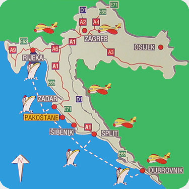

Apartmani Punta
Pakoštane
Obližnje destinacije
| P.P. Vransko jezero | 1 km |
| Grad Biograd | 6 km |
| N.P. Kornati | 12 nm |
| P.P. Telašćica | 17 nm |
| Grad Zadar | 36 km |
| Grad Šibenik | 40 km |
| N.P. Krka | 47 km |
| N.P. Paklenica | 75 km |
| N.P. Plitvička jezera | 160 km |
Osim gore navedenih destinacija koje svakako vrijedi posjetiti u bližoj okolici Pakoštana možete uživati u izletima do obližnjih otoka, sela, morskom ribolovu ili ribolovu na Vranskom jezeru.
Za one koji više vole fizičke aktivnosti u ponudi su sportovi na vodi, ronjenje, odbojka na pijesku i slični ljetni sportovi. Oko Vranskog jezera je uređena poznata biciklistička staza. Naravno, uvijek je moguće naći i ekipu za mali nogomet ili košarku, a u blizini su i teniski tereni.
Smještaj
Pakoštane se nalaze između Vranskog jezera i mora na pola puta između Zadra i Šibenika, oko 6 km južno od Biograda. Do Pakoštana je moguće doći osobnim automobilom ili autobusom dok do Zadarskog željezničkog kolodvora ima 35 km, trajektne luke 37 km, a do aerodroma 45 km.
Do Pakoštana ćete najlakše doći Jadranskom magistralom ili autoputom:

Da biste lakše našli put do naše kuće na planu Pakoštana možete vidjeti blizinu mora i centra mjesta: